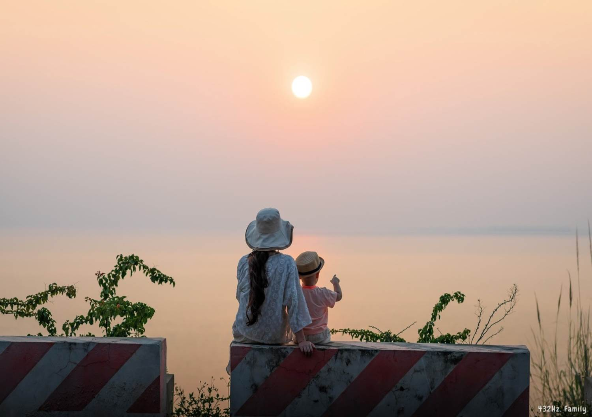
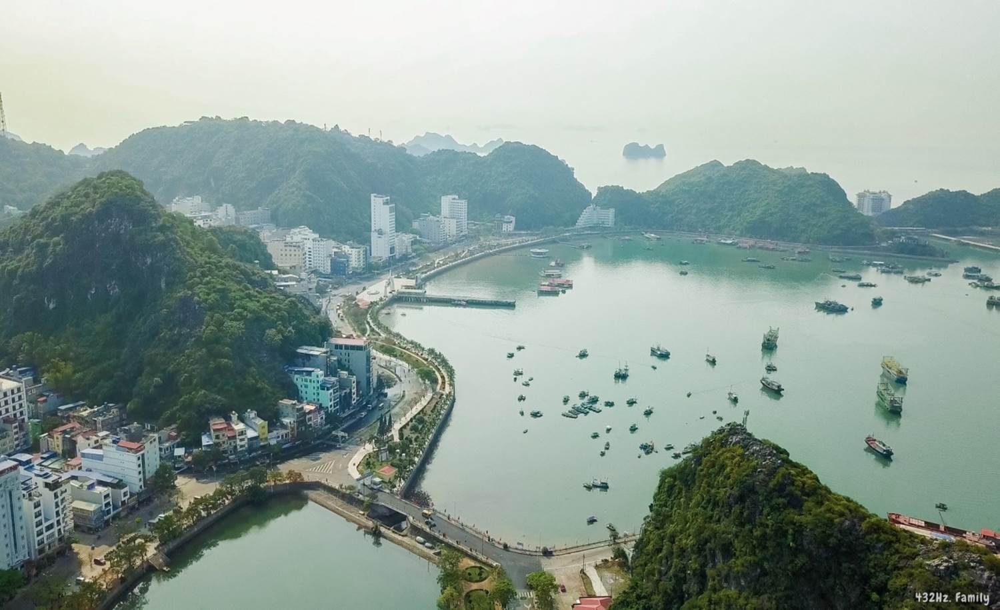
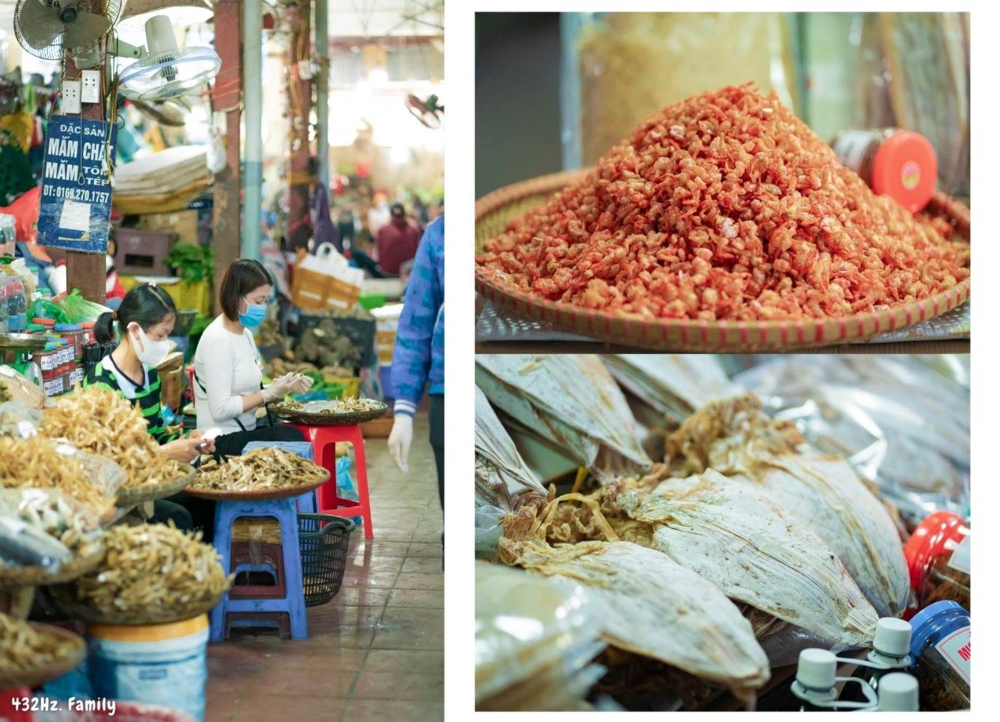

Chia sẻ kinh nghiệm du lịch Cát Bà tự túc

Ước mơ
được đi tàu hỏa của Cam đã trở
thành hiện thực!
Ước mơ
được đi ra biển chơi ở bãi cát thật
to cũng đã trở thành hiện thực!
Còn gì tuyệt vời
hơn cô chú ơi?
Sau đây là một
số thông tin về chuyến đi Cát Bà vừa rồi
của nhà Cam. Hi vọng sẽ giúp ích cho chuyến đi
sắp tới của các gia đình nhỏ ạ 
𝐃𝐈 𝐂𝐇𝐔𝐘𝐄̂̉𝐍 :
Nhà mình đi CÁT BÀ 4
ngày 3 đêm, xuất phát từ Hà Nội với
phương tiện di chuyển chính là tàu hỏa, taxi và xe
máy ạ.
𝐷𝑖 𝑐ℎ𝑢𝑦𝑒̂̉𝑛 𝐻𝑎̀ 𝑁𝑜̣̂𝑖 - 𝐶𝑎́𝑡 𝐵𝑎̀:
tàu hỏa và
taxi
Từ ngày biết bi
bô Cam đã rất thích tàu hỏa, nên lần này nhà mình
quyết định di chuyển bằng tàu để
thỏa mơ ước của con.
Từ Hà Nội
đến Hải Phòng ba mẹ có thể đi từ ga Hà
Nội (tất cả các ngày trong tuần) và ga Long Biên
(từ thứ 2 đến thứ 6). Nhà Cam đi từ ga
Long Biên, tàu LP3 xuất phát lúc 9h30 phút sáng, đến Hải
Phòng lúc 12h.
Toàn bộ toa khách
của tàu này đều là ghế ngồi mềm
điều hòa, giá vé (khứ hồi) cho người
lớn là 178k/người, trẻ em dưới 6 tuổi
miễn phí nếu ngồi cùng bố mẹ nhưng
để thoải mái, mẹ mua cả ghế riêng cho Cam
với giá vé là 134k/vé 2 chiều ạ.
Tàu tuy không còn mới
nhưng khá sạch sẽ, có ngăn để hành lý phía
trên, có ổ cắm điện và móc treo đồ; wc tuy
nhỏ nhưng cũng sạch ạ. Trên tàu có bán bánh giò,
bánh gai, trà, cà phê, chè dừa dầm, bim bim, đồ ăn
vặt... Nhược điểm là tàu đi hơi rung
lắc và hơi ồn nhưng anh bạn nhỏ lần
đầu tiên được đi tàu thì vui tưng
bừng, mải mê nhìn ngắm suốt cả quãng
đường không ngủ tí nào ^^
12h tàu đến ga
Hải Phòng. Nhà mình ăn trưa ở quán Bếp Nhà Tôm
gần ga. Ở đây bán đồ cuốn, nem lụi
Huế, đồ ăn sạch sẽ, vừa miệng lắm
ạ ^^
Ăn trưa xong
khoảng 13h30, chúng mình xuất phát ra Cát Bà. Từ Hải
Phòng ba mẹ có thể đón xe buýt/xe khách tại Bến
Bính, sau đó có thể đi cáp treo hoặc phà qua biển
sang Cát Bà. Nhà mình thì gọi taxi cho chủ động
thời gian và đỡ phải lỉnh kỉnh kéo
đồ. Giá taxi cho 1 chiều Hải Phòng - Cát Bà là 1.600k
đã bao gồm vé phà ạ.
Nếu
đi bằng xe riêng từ Hà Nội thì ba mẹ chỉ
cần đi theo google map đến Bến Phà Gót rồi
đi phà khoảng 15-20 phút sang Bến Cái Viềng và di
chuyển đến trung tâm TT Cát Bà (khoảng 23km). Tổng
thời gian di chuyển bằng xe cá nhân mất khoảng 3h
- 3h30’ tùy tình hình giao thông và thời gian chờ phà ạ.
Ngoài ra có khá nhiều
xe khách đưa đón từ HN đến thẳng Cát Bà
như Cat Ba Discovery… giá vé từ 250k, ba mẹ tìm hiểu
thêm nhé.

𝐷𝑖 𝑐ℎ𝑢𝑦𝑒̂̉𝑛 𝑡𝑎̣𝑖 𝐶𝑎́𝑡 𝐵𝑎̀:
xe máy và
xe điện
Cát Bà có xe điện
chạy khắp nơi, ba mẹ chỉ cần đứng
chờ dọc đường là sẽ có xe qua. Giá xe
điện đi bãi tắm và các điểm loanh quanh trong
thị trấn là 10k/người/lượt, ngoài ra
cũng có thể đến bất kì địa
điểm nào khác trên đảo với mức giá
thương lượng. Các chú bác lái xe rất thoải
mái, thân thiện ạ ^^
Đường sá
đẹp, thuận tiện, nên Cam đi xe điện ra
bãi tắm, còn đi chơi loanh quanh thì được
bố mẹ chở bằng xe máy. Giá thuê xe máy là 100k/ngày, có
thể tự thuê hoặc nhờ homestay/khách sạn gọi
giúp ạ ^^
𝐍𝐆𝐇𝐈̉ 𝐍𝐆𝐎̛𝐈:
Cát Bà có rất
nhiều homestay, khách sạn, resort… Thị trấn Cát Bà thì
nhỏ thôi nên ba mẹ ở chỗ nào cũng tiện
ạ. Nhà Cam đi sát ngày và xác định thời gian
đi chơi bên ngoài là chính nên mẹ chọn một
chiếc homestay xinh xinh trên đường Tùng Dinh, gần
bãi Tùng Thu.
Homestay ở ngay
lối vào thị trấn, nằm trong ngõ dân sinh nên không
ồn ào, bạn chủ home và bố mẹ bạn thì siêu
thân thiện, đáng yêu 
Nếu muốn ở
sang trọng thì ba mẹ có thể đặt phòng ở
Flamingo Cát Bà, nằm trên bãi tắm Cát Cò 2 hoặc MGallery
ở Cát Cò 3, giá phòng từ 2,5tr/đêm ạ.
𝐕𝐔𝐈 𝐂𝐇𝐎̛𝐈:
𝑇𝑎̆́𝑚 𝑏𝑖𝑒̂̉𝑛:
Cát Bà có các bãi tắm:
Cát Cò 1, Cát Cò 2, Cát Cò 3, bãi Tùng Thu (bãi số 4). Nhà mình
thấy Cát Cò 3 cát sạch và bãi đẹp nhất, bãi Tùng
Thu thì lặng sóng hơn nhưng cát không được
sạch bằng các bãi kia nên mặc dù ở ngay cạnh Tùng
Thu nhưng Cam lại hay sang Cát Cò 3 chơi nhất ^^
Bãi tắm vào không
mất phí, nhưng ngồi nghỉ thì mất phí 200k/ô che
nắng, tắm tráng 30k/người, wc 5k/người
ạ 
𝑁𝑔𝑎̆́𝑚 ℎ𝑜𝑎̀𝑛𝑔 ℎ𝑜̂𝑛 𝑡𝑟𝑒̂𝑛 đ𝑢̛𝑜̛̀𝑛𝑔 𝑣𝑒𝑛 𝑏𝑖𝑒̂̉𝑛:
Vì mê mẩn cảnh
mặt trời trên biển từ lúc đi taxi vào thị
trấn nên ngay ngày hôm sau chúng mình đã thuê xe máy chạy
ngược lên để cùng Cam ngắm hoàng hôn tuyệt
đẹp.
Điểm ngắm
cảnh cách thị trấn khoảng 12km, khá là xa nhưng
Cam được ngồi xe máy cũng vui tíu tít hát suốt
đường ^^
Dọc cung
đường ven biển ra đây có những cánh
đồng cỏ bạt ngàn, người dân chăn
thả rất nhiều dê. Cam đã được thả
diều, ụp châu chấu, chơi với các bạn dê…
thật sự không muốn về ^^

𝐾ℎ𝑎́𝑚 𝑝ℎ𝑎́ 𝑙𝑎̀𝑛𝑔 𝑐ℎ𝑎̀𝑖 𝑉𝑖𝑒̣̂𝑡 𝐻𝑎̉𝑖:
Để ra làng chài,
ba mẹ sẽ cần đi thuyền gỗ hoặc cano
từ đảo Cát Bà. Theo nhà mình tìm hiểu thì ở
đây các con có thể đạp xe tham quan làng chài cổ,
thử cảm giác “massage cá”, khám phá rừng quốc gia Cát
Bà…
Làng chài Việt
Hải vốn là một điểm đến dự
định trong chuyến đi lần này của nhà mình,
nhưng cả bố mẹ và Cam đều mê mệt bãi
tắm nên chưa kịp qua, nhất định lần sau
sẽ ghé nhé! ^^
Ngoài ra ba mẹ có
thể đặt tour tham quan vịnh và các đảo
nữa. Lần này nhà mình dành nhiều thời gian hít
thở và tận hưởng nên không di chuyển nhiều,
lần sau có dịp sẽ mua tour đi tham quan xung quanh ^^

𝐀̆𝐍 𝐔𝐎̂́𝐍𝐆
Cát Bà có rất
nhiều nhà hàng, quán ăn với nhiều mức giá. May quá
homestay nhà mình ở cũng có dịch vụ ăn uống
nên mình đặt ăn ở đây luôn. Đồ ăn
siêu nhiều, tươi và giá chỉ bằng gần
một nửa so với việc đi ăn hàng thôi ạ!
Nếu không muốn
ăn ở nhà thì ba mẹ có thể thử các nhà hàng
như Lẩu nướng Thúy Anh, hay các quán cơm trong
chợ Cát Bà cũng được nhiều người đánh
giá tốt đó ạ ^^

𝐓𝐎̂̉𝐍𝐆 𝐊𝐄̂́𝐓 𝐕𝐄̂̀
𝐂𝐇𝐔𝐘𝐄̂́𝐍 Đ𝐈:
 Cam
đã có rất nhiều trải nghiệm với các
phương tiện giao thông: tàu hỏa, taxi, phà, xe
điện và xe máy ạ ^^
Cam
đã có rất nhiều trải nghiệm với các
phương tiện giao thông: tàu hỏa, taxi, phà, xe
điện và xe máy ạ ^^
 Đi
bằng tàu hỏa cho trải nghiệm thú vị nhưng
hơi tốn thời gian di chuyển nên lần sau có
lẽ cả nhà sẽ tự lái xe đi để có
nhiều thời gian chơi hơn và tiện di chuyển
trên đảo nữa.
Đi
bằng tàu hỏa cho trải nghiệm thú vị nhưng
hơi tốn thời gian di chuyển nên lần sau có
lẽ cả nhà sẽ tự lái xe đi để có
nhiều thời gian chơi hơn và tiện di chuyển
trên đảo nữa.
 Cát
Bà thường đông từ tháng 5 đến tháng 9, nhà
mình đi tháng 4 nên mọi thứ đều thảnh
thơi dễ chịu, thời tiết mát mẻ không
bị nóng quá mà vẫn đủ ấm để con
nghịch nước thỏa thích.
Cát
Bà thường đông từ tháng 5 đến tháng 9, nhà
mình đi tháng 4 nên mọi thứ đều thảnh
thơi dễ chịu, thời tiết mát mẻ không
bị nóng quá mà vẫn đủ ấm để con
nghịch nước thỏa thích.
 Thị
trấn du lịch nên không tránh khỏi việc xô bồ
ở các điểm dịch vụ, nhưng nhìn chung các cô
các bác ở đây đều rất thân thiện, vui
vẻ, suốt hành trình nhà mình không gặp điều gì khó
chịu cả ^^
Thị
trấn du lịch nên không tránh khỏi việc xô bồ
ở các điểm dịch vụ, nhưng nhìn chung các cô
các bác ở đây đều rất thân thiện, vui
vẻ, suốt hành trình nhà mình không gặp điều gì khó
chịu cả ^^
Sắp đến
kỳ nghỉ lớn nhất trong năm rồi, chúc các gia
đình nhỏ có những chuyến đi tuyệt vời
ạ